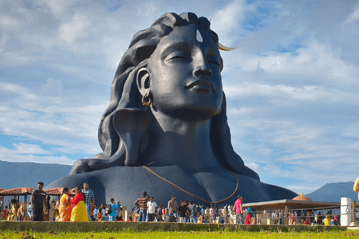

The Isha Yoga Center situated at the foothills of Velliangiri, on the outskirts of Coimbatore, is the headquarters for Isha Foundation. Isha is a sacred space for self-transformation, where you can come dedicate time towards your inner growth. The center offers all four major paths of yoga – kriya (energy), gnana (knowledge), karma (action), and bhakti (devotion), drawing people from all over the world. The Center is dedicated to fostering inner transformation and creating an established state of wellbeing in individuals. The large residential facility houses an active international community of brahmacharis, full-time volunteers and visitors. Isha Yoga Center provides a supportive environment for you to shift to healthier lifestyles, seek a higher level of self-fulfillment and realize your full potential.
